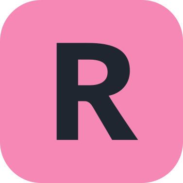

S'y rendre et le visiter
Le château et parc de Fontainebleau sont situés dans le département de la Seine-et-Marne (77). A une distance d'environ de 70 kms de Paris ce ne sont pas les monuments les plus proches et facile d'accès depuis la capitale.
Plusieurs moyens sont disponibles pour se rendre à Fontainebleau la voiture étant celle à privilégier pour la facilité et la mobilité.
Ainsi, depuis Paris compter entre 1h15 et 1h50 selon le trafic pour s'y rendre en voiture.
En prenant l'autoroute A6 en passant par Corbeil-Essones ou l'autoroute A4 puis l'A5b en finissant par la D606 en passant par Melun.
Sur place un parking couvert et payant d'une capacité de 250 places est disponible. Il est situé à proximité immédiate de l'entrée.
En transport en commun, le trajet est estimé a 1h en prenant le Transilien  de Paris Gare de Lyon jusqu'à la gare Fontainebleau-Avon où une navette dessert directement le château et parc de Fontainebleau.